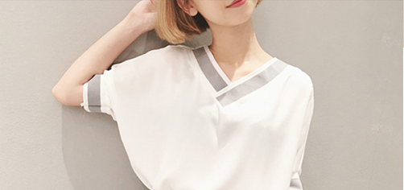
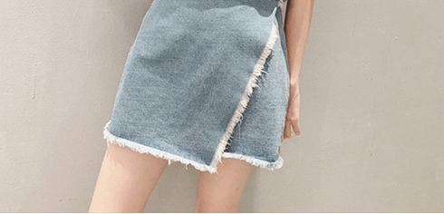
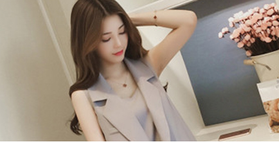

- 关于我们
- 发展历程
- 品牌简介
2018 5
2018年的5月,影视明星刘涛正式成为安正时尚集团旗下主力品牌JZ玖姿 的首位品牌形象代言人;在签约仪式当天,刘涛身穿玖姿2018秋冬秀场同 款亮相,坚定利落的简约风格与刘涛特有的优雅气质完美融合。
2018 2 26
2018年2月26日,作为米兰时装周官方唯一 邀请的中国商业女装品牌玖 姿压轴亮相2018F/W米兰时装周,在国际时尚之都米兰, 以“中国姿造 MADE BY JUZUI” 主题发布2018秋冬新品,作为修饰中国女性身形的时 尚专家,用不变的裁缝初心展现每位女性的优美曲线和自信光芒,发布会 现场,知名女演员刘涛身着JZ玖姿格纹套装优雅出席,共赴盛会。
2017 2 14
2017年2月14日安正时尚集团股份有限公司(股票简称:安正时尚,股 票代码603839 )股票在上海证券交易所上市,高圆圆身着"JZ玖姿” 定 制款服装出席。
2016 10
集团旗下品牌FIONA CHEN (斐娜晨)以“消失的动物”为灵感,于中国 国际时装周拉开品牌2017春夏时装大秀
设计理念 DESIGN CONCEPT
秉承“塑形、优雅、大气、经典、时尚”的设计理念,运用优质上等的面料精 致的细节装饰、优雅的色彩和图案,加上时尚的设计和巧妙的剪裁,勾勒出女 性的线条美感,妆点现代都市女性的多彩生活。


品牌理念 BRAND CONCEPT
追求时尚、精致与实用美学的完美平衡,通过对国际流行趋势与女装市 场的深入研究,整合国际、国内尖端时尚资源,融汇贯通,倾心专注精 彩演绎现代都市女性的自信、优雅、女人味。

设计理念 DESIGN CONCEPT
定位于追求优雅含蓄、融入温柔婉约、崇尚完美精致生活的都市白领女性，她们追 求品质与时尚但绝不随波逐流，习惯被人关注和宠爱、她们的优雅e气质让她们展现 出属于玖姿女性独有的魅力风尚.传承意大利风情，采用精美绝伦的立体剪裁,花型 组合与材质拼接，并选用欧洲当季最流行的高级面料,将意大利时装的精致优雅和 浪漫热情完美融合在一起。完美缔造出中国女性优雅、知性、时尚的服饰经典。